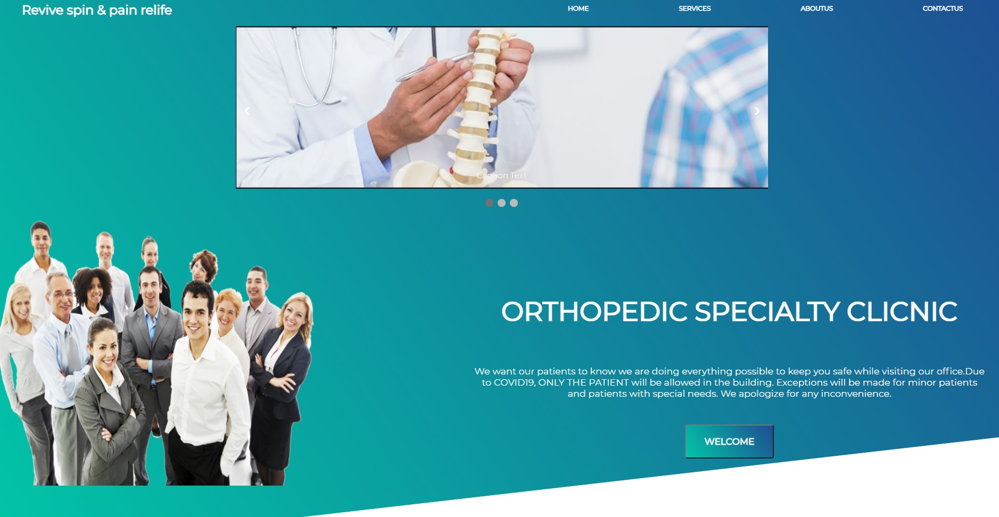
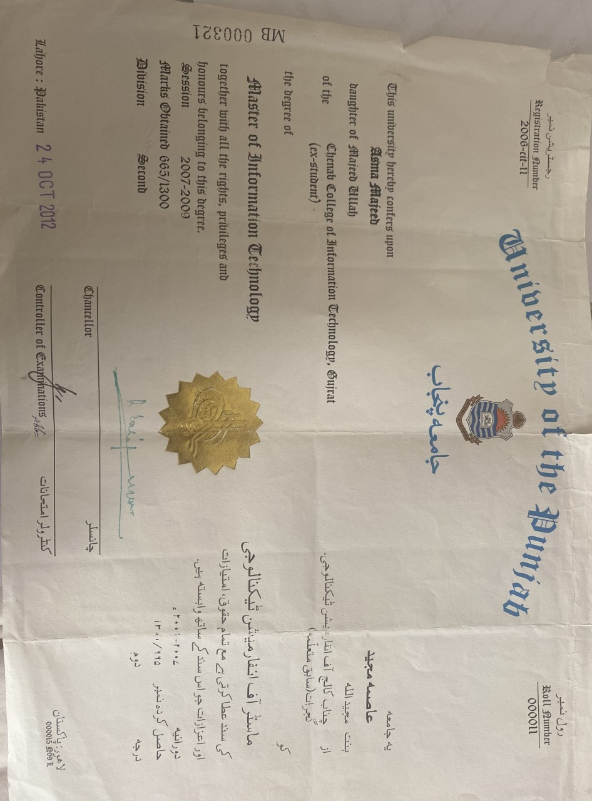
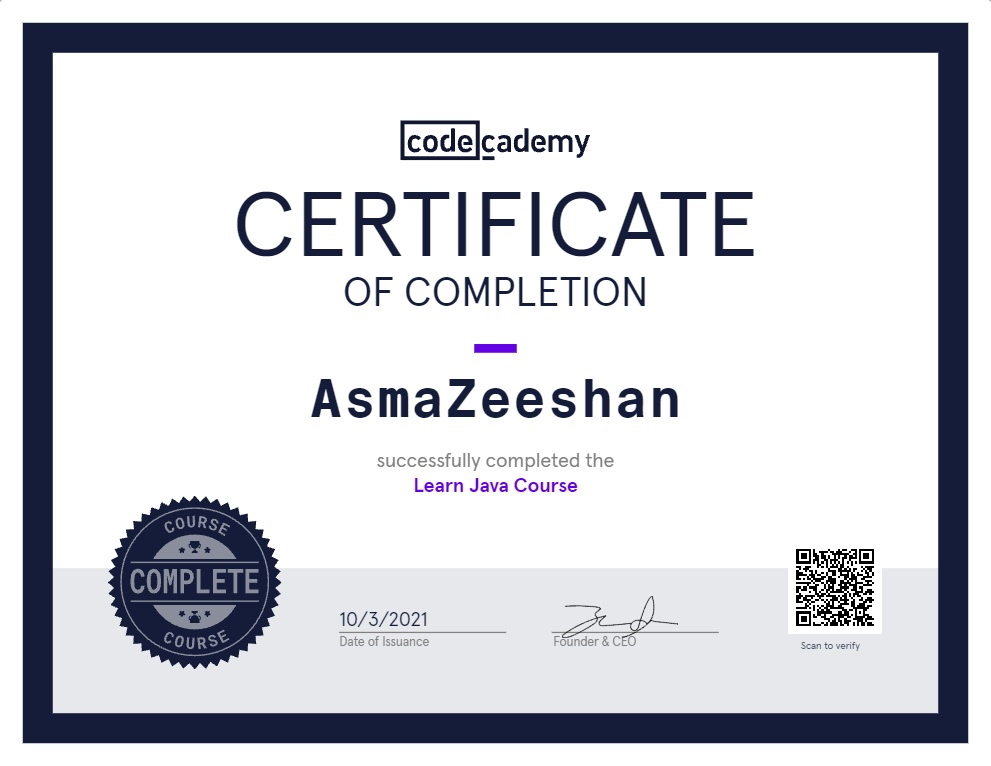
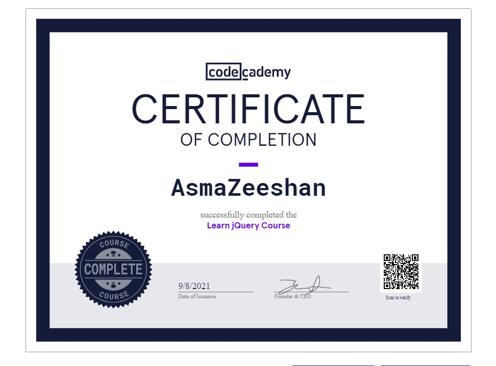
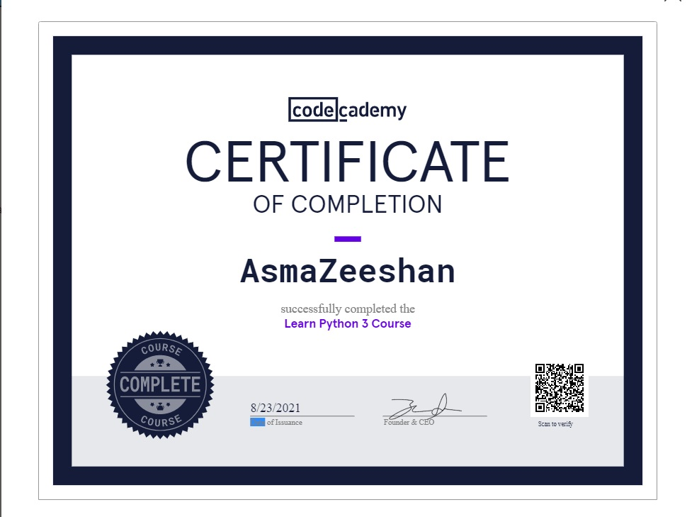

About Me
Hi! I'm Asma Zeeshan and I'm doing "Full-Stack Engineer Coding". I'm an ambitious, hardworking individual, performing well under pressure and accept the challenges to give my best. .
I can Creat responsive Websites, Using different Front-end language and back-end programming.To work in a challenging and growth-oriented position to give the better results of my knowledge and experience and to contribute to a stimulating environment. I am very confident about my skills and honest with my work. I am a quick learner and always try to give my best.
I'm IT graduate and love to explore modren websites.I like to watch documentary movie and reading sometimes. I like to go to gym to get myself fit n try to learn different exercises as well.
Fun fact! I've been programing for 0 seconds!
Projects
My First website

My Degree in IT
My Degree

I helped Charles Babbage on topics ranging from math to computation that helped the development of the Analytical Engine.
My certificates



I am learning full-stake Engineer AND different back-end languages like Java, php, python 3, C# as well.